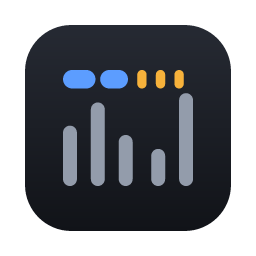
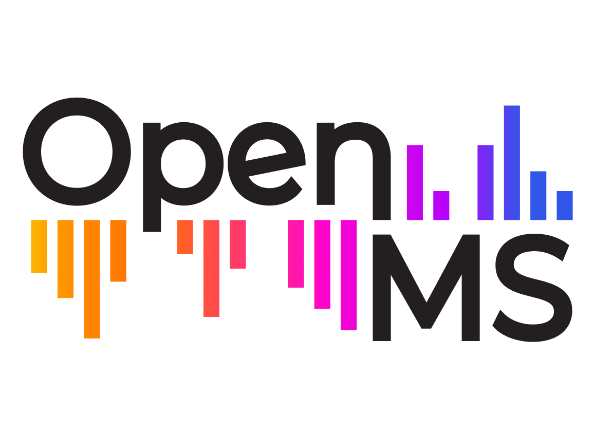

Read short peptide sequences straight from MS/MS spectra, without a database search, and keep only the spectra that match the proteins you care about.
FASTag is for proteomics researchers with DDA, PRM or pseudo-DDA data who want a quick look at a run before, or instead of, a full search: pull out the spectra of a protein of interest, see which organisms a run contains, or hand tags to de novo and open-modification tools. It runs as a desktop app or as an OpenMS command-line tool on macOS, Windows and Linux, and tags three million spectra in about seven seconds on a 128-thread server.

An OpenMS command-line (TOPP) tool with a desktop app — reads mzML, mzPeak and MGF, writes tab-separated tags, and drops into an OpenMS pipeline like any other.
A sequence tag is a run of three or more amino acids read from the mass differences between consecutive fragment ions of one spectrum — no database search and no enzyme assumption needed. FASTag is a fast, sensitive prefilter: it tells you what is worth looking at before you commit to a database search or de novo sequencing.
-fasta.Input: mzML, mzPeak or uncompressed MGF with MS/MS spectra of one precursor each — DDA, PRM, or the pseudo-DDA spectra that DIA tools such as DIAspeXtract or diaTracer derive. Raw DIA files are refused with a message; convert them to pseudo-DDA first. Output: a tab-separated table of ranked tags per spectrum, optionally the matching spectra as mzML or mzPeak.
A few rows of the tag table (selected columns, PXD000001, FASTag 1.14.0). Each row is one tag: the residues read, the mass left unexplained on its N- and C-terminal side, and an E-value (smaller is better):
spectrum tag charge nterm_mass cterm_mass evalue mean_conf
scan=5019 LWV 1 1070.5592 326.1778 1.27e-09 0.946
scan=6476 VLL 1 1483.8360 211.1521 1.46e-09 0.958
scan=1262 ASA 1 872.4080 598.2782 2.38e-09 0.893
scan=5345 VEE 2 889.5219 1314.7490 5.49e-09 0.907-ion_series auto for ETD/ECD); ion-trap MS2 is
supported but not validated.
The algorithm is a reimplementation of DirecTag (Tabb et al., J. Proteome Res. 2008, 7:3838). How to cite FASTag itself: see Citation.
Measured against DirecTag 1.4.21142 on public ProteomeXchange runs, with FASTag 1.15.0 and settings matched to DirecTag (tag length 3, 50 tags, 100 peaks, no gaps, no deisotoping). Times and memory: 128 threads, same node (AMD EPYC 7763, idle), median of 3 runs, wall clock and peak memory for the whole run, including writing the tags. The PXD000001 rows are accuracy, not timing:
| FASTag | DirecTag | |
|---|---|---|
| PXD047793, timsTOF diaTracer pseudo-MS2, 3.09 M spectra, 24.7 GB | 7.13 s, 544 MB | 732.69 s, 70.3 GB |
| PXD028735, raw timsTOF diaPASEF, 151,648 spectra (check set to warn; not a recommended use) | 7.70 s, 864,815 tags | 479.9 s, 0 spectra read |
| Valid tag ranked first (PXD000001) | 90.91% | 88.69% |
| Valid tag within top 50 (PXD000001) | 98.62% | 98.62% |
FASTag's own defaults (gaps, deisotoping) rank a valid tag first more often than the DirecTag-matched settings: 93.1% vs 90.9% on PXD000001 (Orbitrap, Mascot truth), 67.3% vs 64.7% on PXD054073 (timsTOF ddaPASEF) and 53.8% vs 48.0% on PXD076528 (Astral DDA; both against Sage at 1% FDR). DirecTag's times and memory are from the same node with the same inputs (2026-11-15); its PXD000001 accuracy is from the 2026-09-07 run (BENCHMARK-DirecTag.md). Every number here, with the scripts, input checksums and per-run rows: speed and accuracy.
On the default path memory is flat in the file size rather than proportional to it, so a run
is bounded by threads, not by input (-out_spectra and a few reports keep per-run
state). Both tools reach the same accuracy ceiling on PXD000001 — 98.62% of the spectra
identified by its Mascot search get a valid tag — and FASTag gets there sooner in the ranking.
By default FASTag refuses raw DIA such as PXD028735; tag it through pseudo-DDA spectra instead.
Current release: see the release page (what changed). Every release has the command-line tool and a desktop app that runs it: pick files and options in a form, follow progress, and browse tags, spectra and reports.
Binaries are self-contained — the tool, its libraries and the OpenMS data it needs. macOS builds are signed with a Developer ID certificate, notarized by Apple, and the disk images carry their notarization ticket, so they open with no network connection.
Your system:
| Platform | Desktop app | Command line |
|---|---|---|
| macOS 13.4+, Apple silicon | FASTag-<version>-gui-macos-arm64.dmg | FASTag-<version>-macos-arm64.dmg |
| macOS 13.4+, Intel | FASTag-<version>-gui-macos-x64.dmg | FASTag-<version>-macos-x64.dmg |
| Windows x64 | FASTag-<version>-gui-windows-x64-setup.exe | FASTag-<version>-windows-x64.zip |
| Linux x86-64 | AppImage, tarball or .deb | FASTag-<version>-linux-x64.tar.gz |
| Linux arm64 | AppImage, tarball or .deb | FASTag-<version>-linux-arm64.tar.gz |
On macOS both builds are also on Homebrew:
brew install --cask okohlbacher/fastag/fastag (app) or
brew install --cask okohlbacher/fastag/fastag-cli.
Homebrew casks need macOS 14 or later; on macOS 13.4–13.x use the disk image.
Species detection uses a taxonomy index of about 1 GB. Every release download above includes it,
the Windows installer too; the separate
FASTag-<version>-taxonomy-k7.tar.gz
is only for source builds and custom installs. The Linux desktop app needs Ubuntu 22.04 or Debian 12 or newer (glibc 2.35, WebKitGTK 4.1): the .deb installs its dependencies, the AppImage needs FUSE 2 (libfuse2, libfuse2t64 on Ubuntu 24.04); on RHEL, Rocky and Alma use the command line. Windows binaries are not yet
code-signed, so SmartScreen will warn on first run. All releases:
github.com/okohlbacher/FASTag/releases.
Desktop app: open it, choose a spectrum file and an output folder, check the fragment tolerance, and press Run; the tag table opens when the run is done. Command line: the default fragment tolerance is 20 ppm, right for Orbitrap, timsTOF and Astral MS2. On ion-trap MS2 set it to 0.3 Da: a tolerance that is too tight gives almost no tags rather than an error.
Try it on the example run shipped with every release (FASTag/examples/; ion-trap
MS2, hence 0.3 Da). The tutorial
walks through it with expected output; the
desktop app manual opens
the same data with File > Open Example Data.
# tags for every MS2 spectrum: 139 MS2 spectra, 5937 tags
FASTag -in examples/Ecoli_MS2_small.mzML -out tags.tsv \
-fragment_tolerance 0.3 -fragment_tolerance_unit Da
# keep only tags occurring in three E. coli proteins, and the spectra carrying them
FASTag -in examples/Ecoli_MS2_small.mzML -out hits.tsv \
-fragment_tolerance 0.3 -fragment_tolerance_unit Da \
-fasta examples/Ecoli_MS2_small.fasta -extension 1 -out_spectra hits.mzMLOn your own data:
# tags for every MS2 spectrum in a run
FASTag -in run.mzML -out tags.tsv
# high-resolution data, seed length 3 extended to at most 15 residues
FASTag -in run.mzML -out tags.tsv -tag_length 3 -extension 6
# ion-trap MS2 — set the tolerance to match the analyser
FASTag -in run.mzML -out tags.tsv -fragment_tolerance 0.3 -fragment_tolerance_unit Da
# keep only tags occurring in a protein of interest, and the spectra carrying them;
# tags must reach about 4 residues for one protein (-extension 1), 7-8 for a proteome (-extension 3)
FASTag -in run.mzML -out tags.tsv -fasta protein.fasta -extension 1 -out_spectra hits.mzML
# mzPeak in, mzPeak out — any combination of mzML and mzpeak works
FASTag -in run.mzpeak -out tags.tsv -out_spectra hits.mzpeak-threads 0 (the default) uses half the logical cores. Isotope collapsing and one gap
per tag are on by default. For the fastest possible run, or to
match a tool with no equivalent of either, add -no_deisotope -gaps 0.
FASTag reads and writes mzPeak, the open, Parquet-based file format for mass-spectrometry data. On centroided MS2 tagging is unaffected by which you use: reading a run as mzPeak gives the same spectra as reading it as mzML, and a run written to mzPeak and tagged again reproduces the original tag set exactly.
-out_spectra to mzPeak refuses spectra with per-peak ion mobility (timsTOF
frames); write mzML for those.FASTag reads and writes mzPeak through OpenMS, built into every released binary.
For FASTag, cite the release you used (version and date; GitHub's "Cite this repository" gives it
from CITATION.cff; the
repository is archived by
Software Heritage,
origin swh:1:ori:6ec7356bbacb9bf3110bf84321f3b4b1c65394fd, and each release requests a new save).
A FASTag article is in preparation.
Kohlbacher O. FASTag: a fast parallel sequence tagger and tag-based filter for peptide MS/MS spectra. Version 1.15.1, 2026. https://github.com/okohlbacher/FASTag
For the algorithm:
Tabb DL, Ma ZQ, Martin DB, Ham AJ, Chambers MC. DirecTag: accurate sequence tags from peptide MS/MS through statistical scoring. J Proteome Res 2008; 7(9): 3838–46. doi:10.1021/pr800154p
For the framework:
Pfeuffer J, Bielow C, Wein S, et al. OpenMS 3 enables reproducible analysis of large-scale mass spectrometry data. Nat Methods 2024. doi:10.1038/s41592-024-02197-7